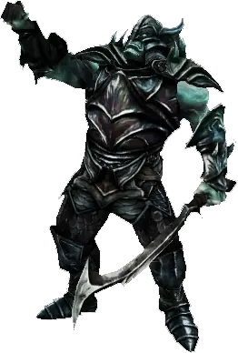

Открыть в интерактивной вики →

| Уровень | лёгк. 145 / норм. 145 / тяжел. 185 |
|---|---|
| Зоны атаки | ближняя, дальняя, ментальная |
| Шанс дропа 100% — уровни | лёгк. 1-125 / норм. 1-125 / тяжел. 140+ |
| Шанс дропа 90% — уровни | лёгк. 126+ / норм. 126+ / тяжел. -- |
| Шанс дропа 70% — уровни | -- |
| Группа боссов | Ужас |
| Сила (PvE) | норм. 9752 / тяжел. 14 583 |
| Аспект | Hegun |
| Здоровье | лёгк. 8100/8900 / норм. 8100/8900 / тяжел. 13000/14000 |
| Мана | 4100/4800 |
| Выносливость | 4100/4900 |
Локация
Навыки
Зависит от класса игрока